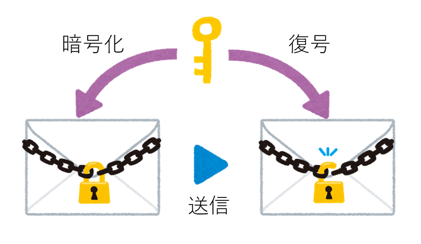
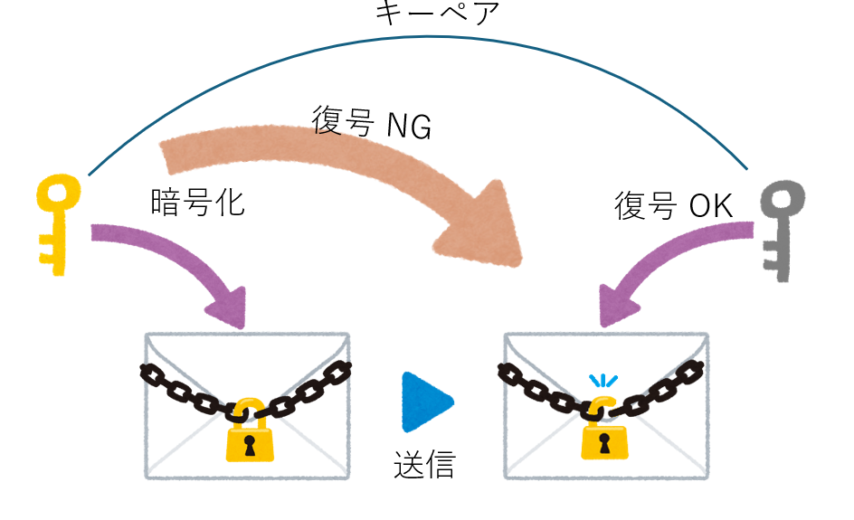
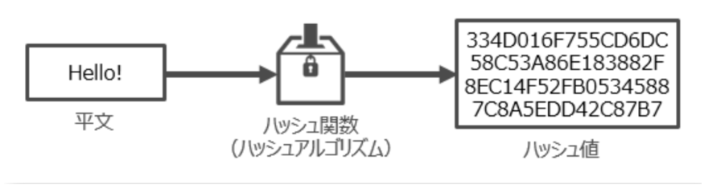
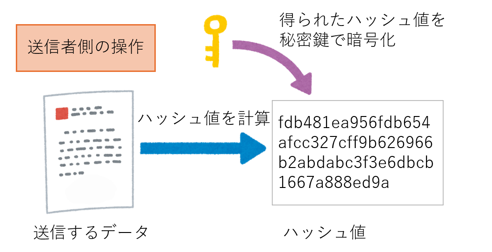
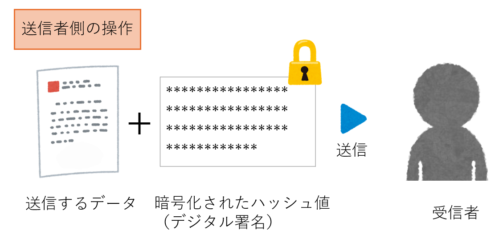
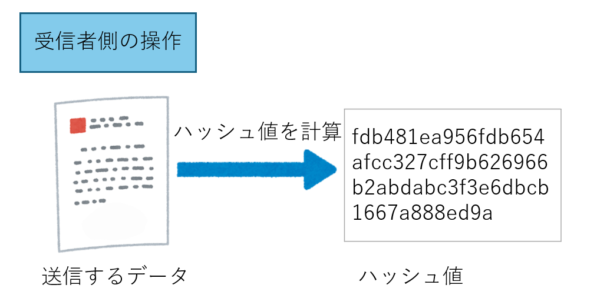
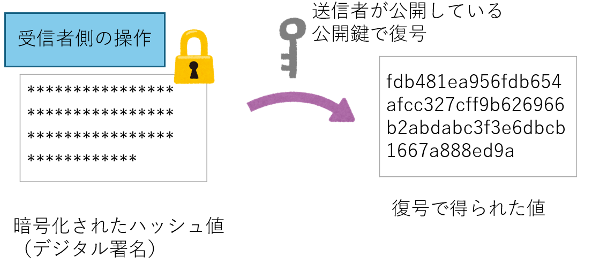
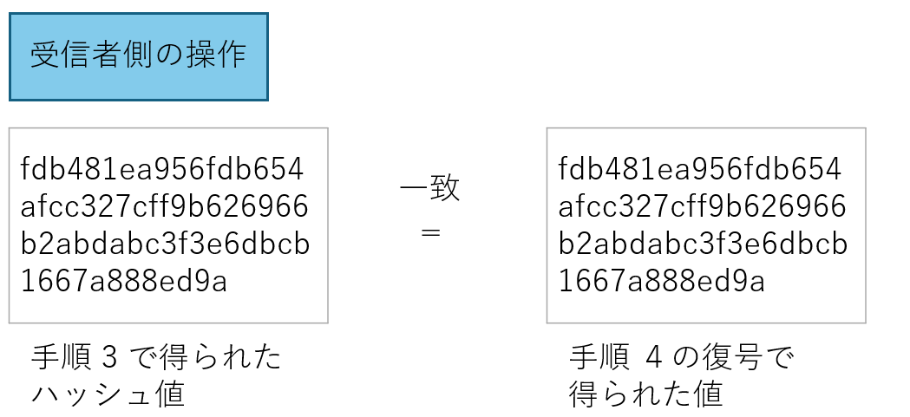
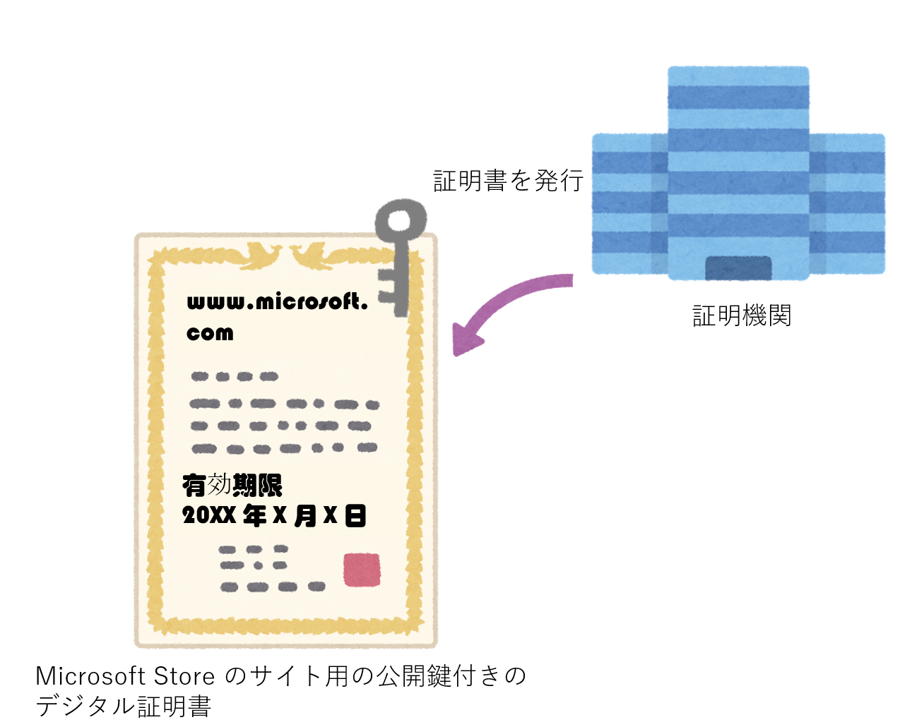
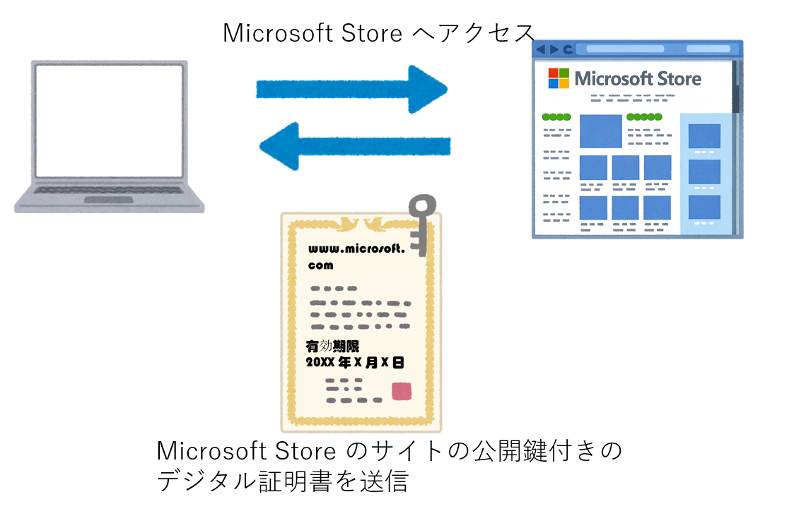

こんにちは。Windows サポート チームです。
本記事では、PKI (Public Key Infrastructure / 公開キー基盤) の概要について説明します。
PKI は Windows Server の Active Directory 証明書サービス (AD CS) をはじめ、多くの Windows テクノロジの基盤となる重要な仕組みです。 身近なシナリオを例に挙げながら、PKI が解決する課題と、その基本的な仕組みについて紹介します。
PKI が必要とされる背景
はじめに、PKI がなぜ必要とされるのかを、身近な例を使って考えてみましょう。Surface 購入を例としてみます。
私たちが販売店へ直接行って、 Surface を購入する場合、商品をレジに持っていき、クレジットカードなどを利用して支払いを行い購入する、といった形になると思います。販売店へ直接行く場合は、販売店の店員さんと直接顔を合わせ、値段を確認して、確かに信頼できるお店であることを私たちが自分の目で確認して購入することができます。
一方、Microsoft Store の Web サイトで Surface を購入するシナリオでは、 購入の際に、氏名、住所、クレジットカード番号などの個人情報を Web サイト上で入力します。インターネット越しでのやりとりでは相手の姿が見えません。
入力した情報はインターネットを通じて相手に送られますが、通信経路上で通信相手以外の人に見られることはないでしょうか。また、入力した情報がどこかで書き換えられることはないでしょうか。そもそも、やり取りしている顔も見えない相手は、本当にやり取りしたい相手（Microsoft Store）なのでしょうか。
上記のような不安を簡単にまとめると、以下のような脅威に分類できるかと思います。
- 盗聴 (暗号化されていない通信の傍受): 入力したクレジットカード番号や個人情報が、通信経路上の第三者に盗み見られる可能性があります。
- 改ざん: 注文内容や支払い情報が、通信の途中で第三者によって書き換えられる可能性があります。
- なりすまし: アクセスしている Web サイトが、本物の Microsoft Store ではなく、悪意のある第三者が作成した偽のサイトであり情報が盗まれる可能性があります。
PKI は、インターネット上で見知らぬ相手とやり取りを行うにあたって、このような脅威から守る（安全にやり取りを行う）ための仕組みを提供します。
暗号技術
インターネット上で、上記のような脅威から守るため、そして PKI について理解するうえで、暗号技術が不可欠です。ここでは最低限押さえておきたい暗号方式、そしてデジタル署名について説明します。
暗号方式
暗号化方式としては大きく、共通鍵暗号方式と公開鍵暗号方式(非対称暗号) があります。
押さえておきたいポイント：
- 共通鍵暗号：暗号化と復号に同じ鍵を使う
- 公開鍵暗号：暗号化と復号に異なる鍵（公開鍵と秘密鍵）を使う
共通鍵暗号方式:
データを暗号化する鍵と、データを復号する鍵が同一の暗号方式です。公開鍵暗号方式に比べて処理速度が速いというメリットがある一方で、鍵を事前に安全な方法で共有する必要があるというデメリットがあげられます。
また、共通鍵の鍵を通信相手に事前に共有する仕組みとしては鍵交換と呼ばれる仕組みがあり、鍵交換の仕組みの例としてはハイブリッド暗号などが挙げられます。
共通鍵暗号方式の代表的なアルゴリズム:AES, 3DES, DES 等

公開鍵暗号方式(非対称暗号):
公開鍵(公開し誰でも使える鍵)とそのキーペアとなる秘密鍵(他の人には知られてはいけない鍵)の 2 つの鍵を利用する暗号化方式です。
- 公開鍵：誰に見せてもよい鍵
- 秘密鍵：持ち主だけが厳重に保管する鍵
公開鍵暗号方式は、暗号化に使用する鍵と、復号に使用する鍵が異なっていることが特徴であり、主に次の2つの目的で利用されます。 - 暗号化：公開鍵で暗号化し、対応する秘密鍵で復号する（内容を第三者に見せないため）
- デジタル署名：秘密鍵で署名を作成し、公開鍵で検証する（送信者本人であることと改ざんされていないことを確認するため）
公開鍵暗号方式の代表的なアルゴリズム:RSA, DSA, ECDSA 等

デジタル署名
インターネット上でデータが改ざんされていないかを確認するために 、デジタル署名と呼ばれる仕組みによって実現しています。
デジタル署名は、ハッシュ アルゴリズム(ハッシュ関数) + 公開鍵の組み合わせで成り立っています。この仕組みにより、受信者は次の2点を確認できます。
- データが途中で改ざんされていないこと
- データが確かに送信者本人によって作成されたこと
ハッシュ関数
ハッシュ関数とはデータの改ざん検知に使われるもので、ハッシュ関数では任意のデータから固定長のデータを生成する関数です。
ハッシュ関数で生成された値をハッシュ値と呼ばれます。(ダイジェストという呼び方もあります。同じものです)
ハッシュ関数は不可逆関数で、ハッシュ値より元の値を算出することはできません。同じデータをハッシュ関数に入力すると同じハッシュ値が生成され、入力する文字列を1文字でも変更すると生成されるハッシュ値は全く違うものになります。
また、ハッシュ値は固定長なので、ハッシュ関数に入力する文字が “A” の一文字でも、数万行になる文字列を入力でも、同じデータサイズのハッシュ値を得られることができます。

デジタル署名の流れ
ハッシュ値と、公開鍵暗号方式の特性を生かし、デジタル署名は以下のような流れで作成と検証が行われます。
送信者が送信するデータのハッシュ値を計算し、自分の秘密鍵でそのハッシュ値を暗号化します。これがデジタル署名です。

送信者は、送信するデータとデジタル署名をセットで受信者に送信します。

受信者は同じハッシュ アルゴリズムで送信されたデータのハッシュ値を計算します。

送信されたデータと一緒に送られたデジタル署名を送信者の公開鍵で復号します。

手順 3 と手順 4 でえられたハッシュ値を比較します。一致すれば改ざんなし、不一致なら改ざんありと判断できます。

ハッシュ関数はデータが 1 文字でも異なればハッシュ値が全く異なるという性質を持っています。これによって、データの改ざんを検出します。
※本記事では広く利用されているRSA方式を例に「秘密鍵で暗号化し、公開鍵で復号する」と 説明していますが、これは比喩的な表現です。実際には、デジタル署名は 暗号化・復号ではなく、数学的な署名・検証処理として実装されています。 ここでは理解しやすさを優先した便宜上の表現を用いています。
デジタル証明書
これまでの内容から、暗号技術によって、データを第三者に読み取られたり、改ざんされたりといった脅威から守ることができることは想像できるかと思います。
やり取りがみられないように、相手から送られてきた公開鍵を使ってデータを暗号化し、やり取りが改ざんされたものではないかどうかはデジタル署名を確認すればよいわけです。実際の通信では、性能や安全性を考慮して複数の仕組みが組み合わされています。
ここで課題がまだ残っています。
この構図は、「受信者が受け取った公開鍵」 は、「本物の通信相手の公開鍵」 であることが前提に成り立ちます。見ず知らずの人が送ってきた公開鍵が、確かに本人のものであることをどのように確認すればよいでしょうか。この問題は、通信の途中に第三者が割り込んで、相手になりすまして情報を受け取ってしまうような攻撃につながります。
現実世界で考えてみましょう。私たちが、自身がその本人であることを証明するとき、どんな手段を取れるでしょうか。
例えば、運転免許証やマイナンバー カードといった身分証を提示する、といった方法が挙げられるかと思います。
身分証を提示された相手は、それらの身分証は公的機関によって本人であることが審査されたうえで発行されている、つまり信頼できる第三者機関から発行されていることをもって、本人であると信用します。
現実世界で利用される身分証明書と似た機能を持つ仕組みは、インターネットの世界でも存在します。
現在のインターネット上における PKI は、信頼のおける第三者機関を信頼する、というモデルとなっており、 「やり取りする相手の本物の公開鍵」であることを、証明機関 (CA: Certificate Authority) が発行するデジタル証明書が証明します。
※証明機関は、認証局、 CA など様々な呼び方があります。
それではここで、冒頭で挙げたMicrosoft Store の Web サイトでのやり取りの例に戻りましょう。
運転免許証などの身分証明書を公的機関から発行してもらう際、本人確認書類など必要な申請書類等を提出し発行してもらうのと同様に、デジタル証明書を発行する場合も必要な申請書類を提出し審査が行われます。
CA は 「この公開鍵は確かに Microsoft Store の Web サイトのものである」 ことを審査の上、証明機関が持つ秘密鍵を用いてデジタル署名を施すことで、デジタル証明書として発行します。CA がデジタル証明書を発行する際に、証明書発行要求元から提出された情報に含まれる公開鍵も付与されます。
※ 実際の審査内容は、証明書の種類によって異なります。

私たちがブラウザーから Microsoft Store の Web サイトにアクセスした際、Microsoft Store の Web サイトから公開鍵付きのデジタル証明書が送信されます。

ブラウザー側では、 受け取った公開鍵付きのデジタル証明書が信頼できるものなのか、つまり信頼できる第三者機関から発行されたものなのか検証（証明書検証) を行います。このようにして、やり取りする相手が本当のやり取り相手であることを確認しています。
証明検証についての詳細は次のブログでご紹介します。
まとめ
インターネット上で見知らぬ相手とやり取りを行う際、盗聴や改ざん、なりすましなどの脅威が挙げられます。そのような脅威に対して、暗号化やデジタル署名、デジタル証明書などで安全な通信を実現しています。
PKI（公開鍵基盤）は、「公開鍵・証明書・認証局を組み合わせて、相手を安全に信頼するための仕組み」です。
- 暗号化: 暗号化方式には主に共通鍵暗号方式と公開鍵暗号方式などが挙げられ、盗聴から保護する。
- デジタル署名: ハッシュ関数と公開鍵暗号方式を利用して、改ざんを検知する。
- デジタル証明書:信頼のおける第三者機関が発行したデジタル証明書を利用して、公開鍵が本人のものであると証明する。